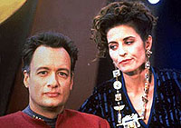
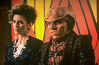

MANCHETE
DO EPISDIO
Q e Vash queimam seu
filme na nica
apario dos personagens na srie
Episdio
anterior | Prximo
episdio
Sinopse:
Data Estelar:
46531.2.
Vash, antiga companheira de Q,
encontrada no quadrante Gama pelo pessoal de Deep Space
Nine. Quando levada a bordo da estao, traz consigo,
inadvertidamente, o prprio Q.

O
objetivo da entidade , a todo custo, ter Vash novamente como sua
companheira. No entanto, a arqueloga no est interessada. Ela
e Quark preparam um leilo de artefatos coletados ao longo dos
dois anos que passou no quadrante Gama.
Enquanto isso, a estao comea a passar por srias falhas
estruturais que ameaam sua integridade. Por fim, descobre-se que
a causa um dos artefatos de Vash, que na verdade um tipo de
ovo de uma espcie aliengena desconhecida.
Comentrios:
"Q-Less" foi todo centrado em uma tentativa de
transferir o sucesso de A Nova Gerao para a
recm-criada Deep Space Nine. Para isso, uma
histria que no se justifica foi elaborada, com o nico
propsito de conquistar para Q um novo emprego aps o fim das
aventuras de Jean-Luc Picard e companhia na televiso.
O resultado no poderia ter sido mais catastrfico. O episdio
baseado em uma trama absurda (beirando o absoluto ridculo),
com uma insuportvel quantidade de "tecnobaboseira",
tudo visando o nico propsito de termos um episdio com Q em Deep
Space Nine.

O
carisma do personagem bem que tenta fazer sua mgica. Algumas
falas de Q at tm um certo apelo, mas nada foi capaz de chegar
perto de salvar este episdio.
Q, como apresentado aqui, no pertence a DS9. E
Vash (essa, em qualquer contexto possvel) no pertence a lugar
nenhum. Vash no! Pelo amor de Deus!
Citaes:
Quark (sobre
os participantes do leilo) - "They're all
ridiculously wealthy... and not too bright."
(Eles so todos ridiculamente ricos... e no muito espertos.)
Q - "Picard and
his lackeys would have solved all this technobabble hours ago!"
(Picard e seu lacaios teriam resolvido toda essa tecnobaboseira
h horas!)
Trivia:
 Primeiras e nicas participaes de Q (John deLancie) e Vash
(Jennifer Hetrick) em Deep Space Nine.
Primeiras e nicas participaes de Q (John deLancie) e Vash
(Jennifer Hetrick) em Deep Space Nine.
"Q" tem uma pronncia alem similar a "vaca"
naquele idioma assim como "Vash" tem uma pronncia
francesa similar a "vaca" naquele idioma.
Robert Hewitt Wolfe foi contratado aps vender o primeiro
rascunho dessa histria. Sua longa parceria com Ira Steven Behr
data da.
Ficha
tcnica:
Histria de Hannah Louise
Shearer
Roteiro de Robert Hewitt Wolfe
Direo de Paul Lynch
Exibido em 08/02/1993
Produo: 007
Elenco:
Avery Brooks como
Benjamin Lafayette Sisko
Ren Auberjonois como Odo
Nana Visitor como Kira Nerys
Colm Meaney como Miles Edward O'Brien
Siddig El Fadil como Julian Subatoi Bashir
Armin Shimerman como Quark
Terry Farrell como Jadzia Dax
Cirroc Lofton como Jake Sisko
Elenco convidado:
Jennifer Hetrick como Vash
John deLancie como Q
Van Epperson como "funcionrio
bajoriano"
Tom McCleister como Kolos
Laura Cameron como "uma mulher
bajoriana"